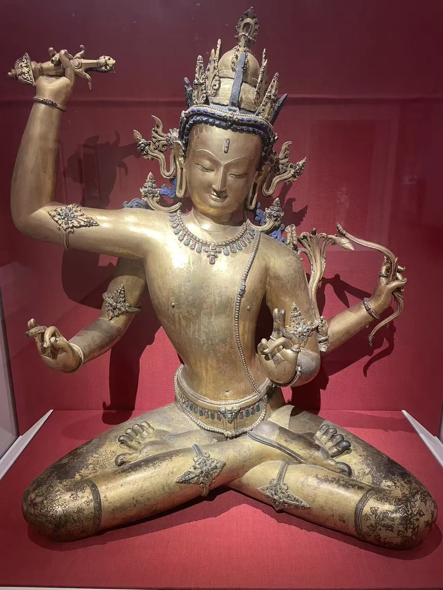
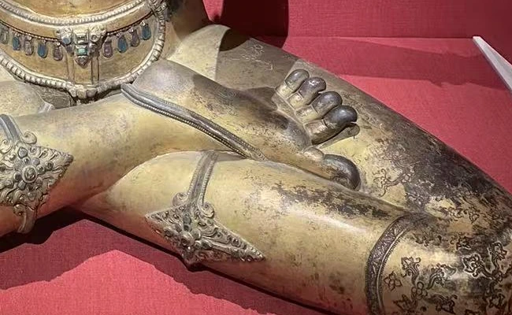
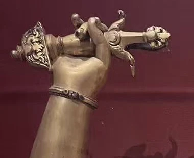
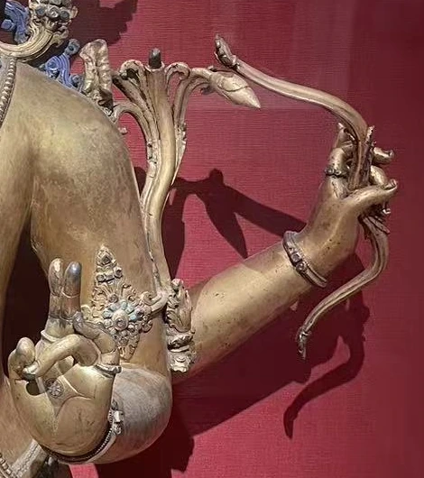

25 / CLOSE LOOKING
四臂之间，一张安静的脸
从一截剑柄、一枝莲花和微微弯曲的脚趾，读克利夫兰这尊15世纪尼泊尔文殊。它值得记住的，是智慧的持物如何与细腻的身体、层叠的金属表面工艺共同成为一个形象。

这是我很喜欢、现场印象也很深的一件作品。四臂向外展开，冠饰和宝石围住身体，面容却安静地留在中央。先看整体，再靠近手指和脚趾，才发现这份平静里藏着许多细小的动作。
身体向外展开，面容向内收拢
这尊像高78.1厘米、宽67.6厘米，展开的手臂给身体留下宽阔的空间。裸露的胸腹向腰间收束，项链与斜过身体的圣线贴着体量行进；眉线、垂眼和小巧的嘴，则将表情收得很轻。四条手臂的不同高度，围出一圈不完全对称的空隙。 [49]
膝前短衣上能见到卷曲的花纹，密集饰件与大片平滑的肌肤并置。双足翻起，脚趾并未松散地摊平。馆方特别将弯曲的大脚趾与瑜伽坐姿中的专注相联系；在照片里，这一点比冠上的宝石更容易被忽略，却让盘坐的身体显得有力量。 [49]


查看完整原片 →

留下的持物，与已经空出的地方
尊像右上手仍握剑柄，剑刃已不见；这把剑象征智慧斩断无明。后方左手持弓，馆方推测原来可能有金属丝作弦，较低的右手则可能曾持箭。箭也可被解释为真言力量的形象，指向集中精神、去除烦恼。 [49]
左侧肘旁升起莲茎，馆方说原来莲上承托经书，如今已失。较低的左手以手势表示传授佛法。因而四臂不是单纯增加动作：剑、弓箭、经书与教导的手势，将智慧表现为破除、专注和传授。眼前的空手与缺口，也是读懂它的一部分。 [49]


查看完整原片 →


查看完整原片 →
金色并不是一种材料
冠、臂钏、项链和踝饰上的红蓝色镶嵌，将目光分散到各个关节；皮肤上的金色则连成较大的面。馆方材料栏列鎏金青铜、宝石及半宝石、胶彩与冷金，因此今天所见，是金属成形、表面着色和镶嵌共同作用的结果。 [49]
冷金通常指金粉与胶调合后施涂，与将金附着在金属上的鎏金工序不同。彩绘能细分眉眼、发色等部位，镶嵌则在金色之间留下颜色的停顿。照片可以看到这种表面层次，但各处冷金和彩绘的分布、先后，以及宝石的具体种类，仍须专门的技术资料来说明。 [62]
山谷中的手艺，怎样留在一尊像上
15世纪正处于加德满都谷地的马拉时期。王室、寺院与城市社群的供养，为金属、木雕和绘画提供了持续的需求；尼瓦尔工匠的活动又越过山口，参与西藏等地的艺术制作。“尼瓦尔”在这里指社群与文化传统，延续于不同时期，并非另一个朝代。 [56] [57]
再回来看这尊文殊，身体与饰件的不同质感便值得分开细看：一边是胸腹饱满而连续的表面，一边是衣纹、花饰、指节的清楚边缘。它让马拉时期的金属手艺成为可以近距离观察的具体对象；至于由哪间工坊制作、原在何处供奉，馆方记录没有给出答案。
资料注 · 记录与解释
尺寸、入藏与查阅范围
克利夫兰艺术博物馆1964.370，15世纪，尼泊尔；整体78.1 × 67.6厘米。馆方以bronze记金属，材料栏据此写鎏金青铜；冷金、胶彩与宝石另列。 [49]
公开来源表记载：1964年由纽约艺术商J. J. Klejman售予博物馆，以Leonard C. Hanna Jr. Fund购藏。记录未向前连接到尼泊尔的原寺院或离境经过。 [52]
馆方还列出1975年Nepal: Where the Gods Are Young及Chandra L. Reedy 1997年Himalayan Bronzes等著录。此次未直接核读其本件条目，故未据此增写铸造方式或材料检测结论。 [52]
资料与来源
作品基本资料据现场展签及下列馆方记录整理；文字中的观看描述基于这里的现场照片。
- [49] 克利夫兰艺术博物馆：Bodhisattva of Wisdom Manjushri，1964.370 ↗
- [52] 克利夫兰艺术博物馆：1964.370 完整馆藏记录（来源与著录） ↗
- [56] John Guy：Arts of the Greater Himalayas: Kashmir, Tibet, and Nepal（大都会，2021） ↗
- [57] Rubin Project Himalayan Art：Newar ↗
- [62] Jean-Luc Estournel：Densatil Monastery: The Commemorative Stupas of the Lang/Pakmodrupa Dynasty（Rubin，2023） ↗